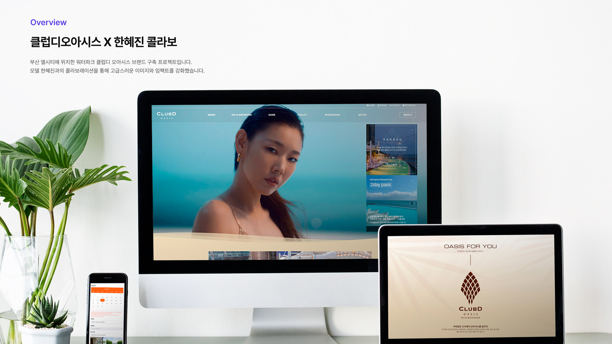
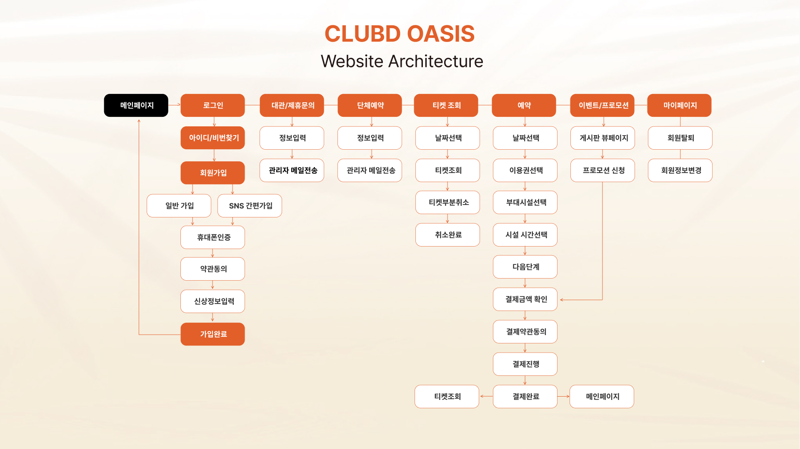
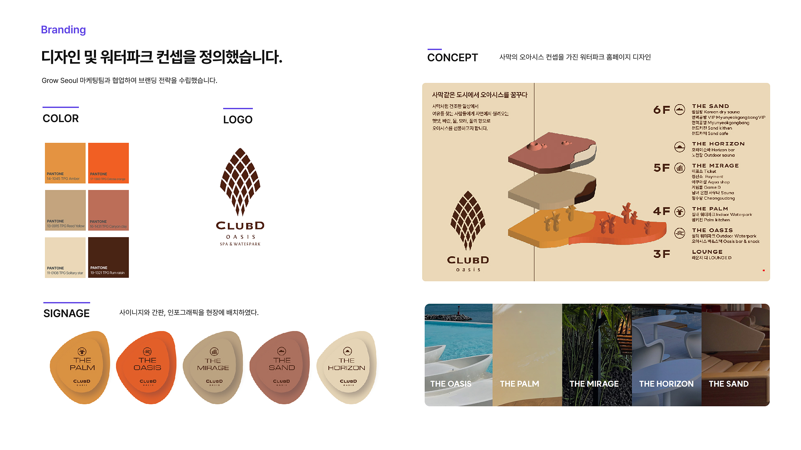
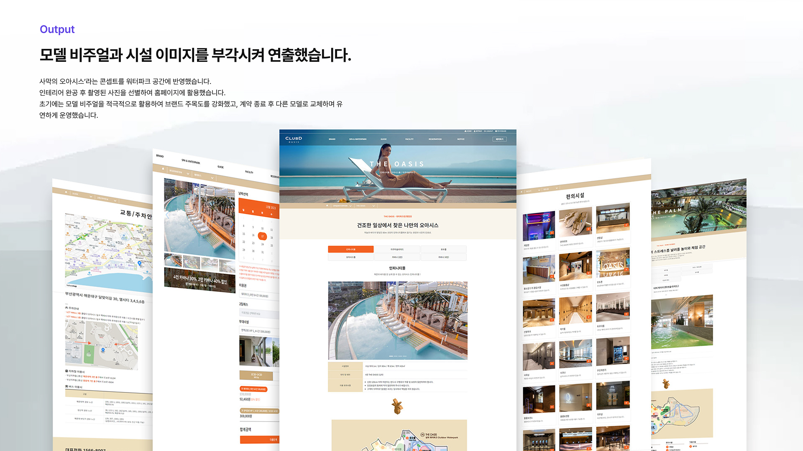
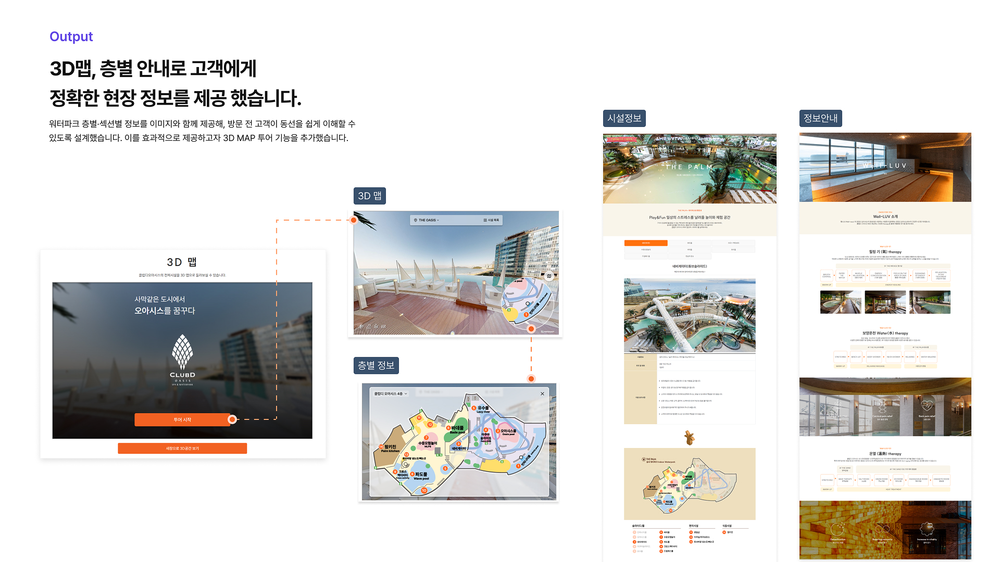
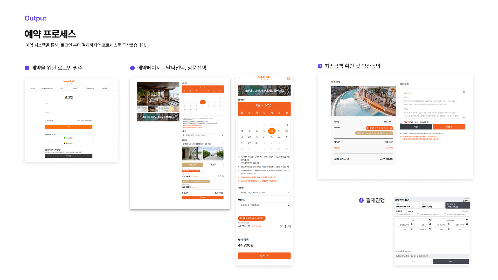
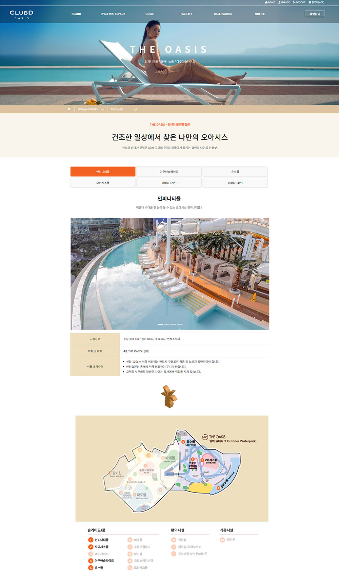
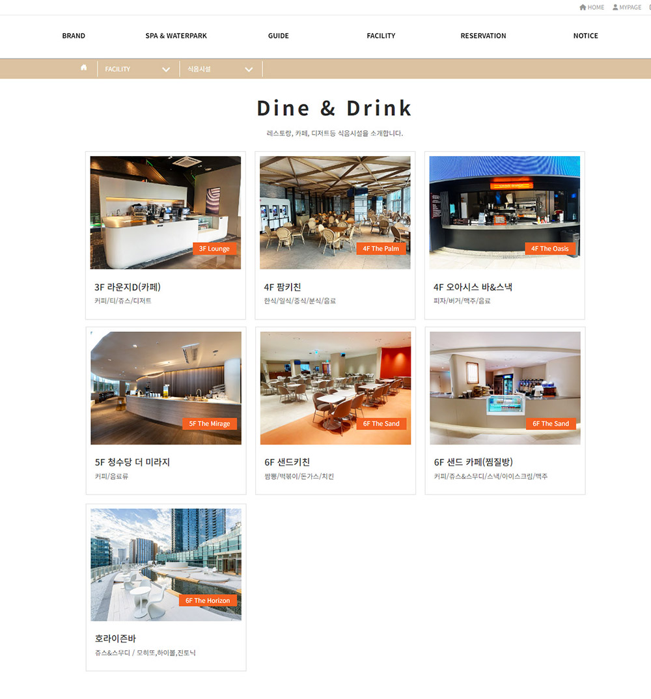
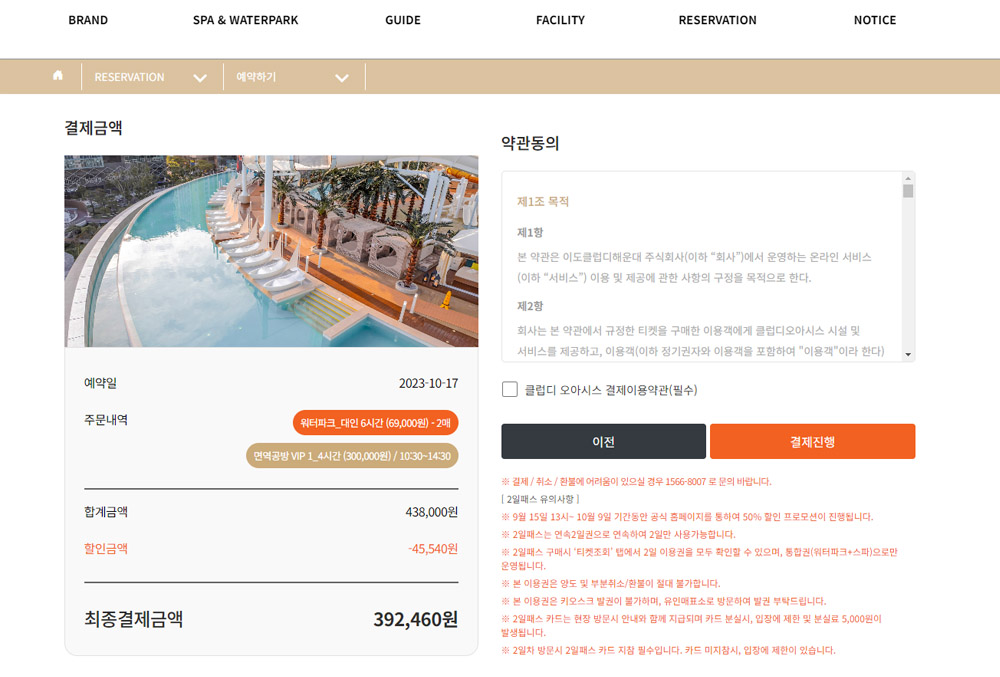
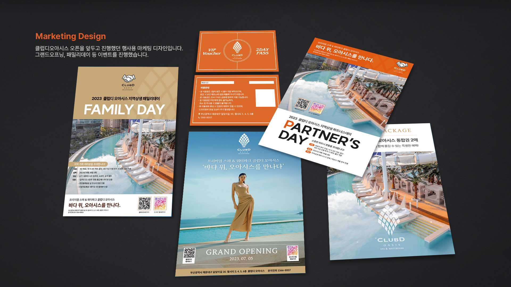

몸과 마음의 휴식을 위한 프리미엄 웰니스 앱이에요
ClubD Oasis는 프리미엄 스파·웰니스 클럽의 예약과 케어 여정을 하나로 연결하는 모바일 앱입니다. 서비스 탐색부터 테라피스트 선택, 예약, 방문 후 홈케어 연결까지 완결된 웰니스 경험을 설계했습니다.
웰니스 유저를 이해하고 예약 플로우를 설계했어요
고급 스파·웰니스 앱 벤치마킹과 회원 인터뷰를 통해 핵심 페인포인트를 도출했습니다. 예약 · 테라피스트 선택 · 방문 전후 케어를 중심으로 정보구조(IA)와 유저 플로우를 설계했습니다.


앱 자체가 하나의 휴식 공간이 되도록 설계했어요
Oasis라는 이름에 걸맞게, 앱 자체가 하나의 휴식 공간이 되도록 설계했습니다.
부드러운 베이지·세이지·딥블루 컬러 팔레트, 여유로운 여백,
느리게 전환되는 애니메이션으로 화면을 보는 것만으로도 안정감을 주는 경험을 만들었습니다.
iOS · Android 양 플랫폼 네이티브 가이드라인을 준수하면서도
웰니스 브랜드의 감성을 일관되게 유지했습니다.
자연스러운 웰니스 분위기 연출
몰입감 있는 화면 구성
심리적 안정감을 유도하는 모션 설계

웰니스 여정을 완성하는 핵심 기능을 설계했어요
서비스 큐레이션, 테라피스트 선택 예약, 방문 후 케어 연결 — 세 가지 기능이 하나의 여정으로 이어지는 통합 경험을 구현했습니다.

주요 화면을 설계했어요
홈·서비스 탐색·예약·마이페이지·방문 후 케어까지 웰니스 여정의 모든 접점에서 일관된 브랜드 무드를 유지하면서 사용자가 편안하게 목적을 달성할 수 있도록 설계했습니다.






프로젝트 회고
Oasis 프로젝트에서는 UX가 단순히 기능의 흐름을 설계하는 것을 넘어 감정과 분위기를 디자인하는 일임을 깊이 깨달았습니다. 비주얼과 모션, 카피 하나까지 브랜드의 감성을 담아야 했습니다.